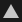
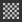

Triangle Fill - fills individual mesh tri's.The Polygon Fill tool () allows you to draw masks quickly by turning selected polygons into a pixel mask. It might seem like a 3D selection tool from other 3DCC applications, but is actually a painting fill tool that results in pixel data. That means selecting and unselecting works by using it to paint white or black.
Polygon fill tool functions on Paint Layers, but is limited to basecolor only and not intended for this purpose. Use it for masks only.
It has 4 selection modes:

Triangle Fill - fills individual mesh tri's.Polygon Fill - fills entire polygons. Doesn't do anything different from Triangle Fill if your mesh is already triangulated upon export.
Mesh Fill - fills entire connected sub-meshes. Like "sub-object" mode in 3D applications, will fill every polygon connected to the one clicked.


These 4 Modes can be combined and switched, meaning some smart usage lets you quickly mark and unmark sections in a mask using Mesh and UV chunk mode.
The (default) hotkeys associated to Polygon Fill tool are: